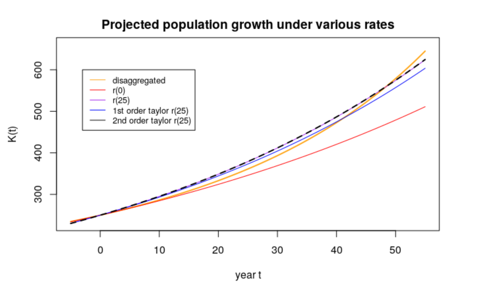
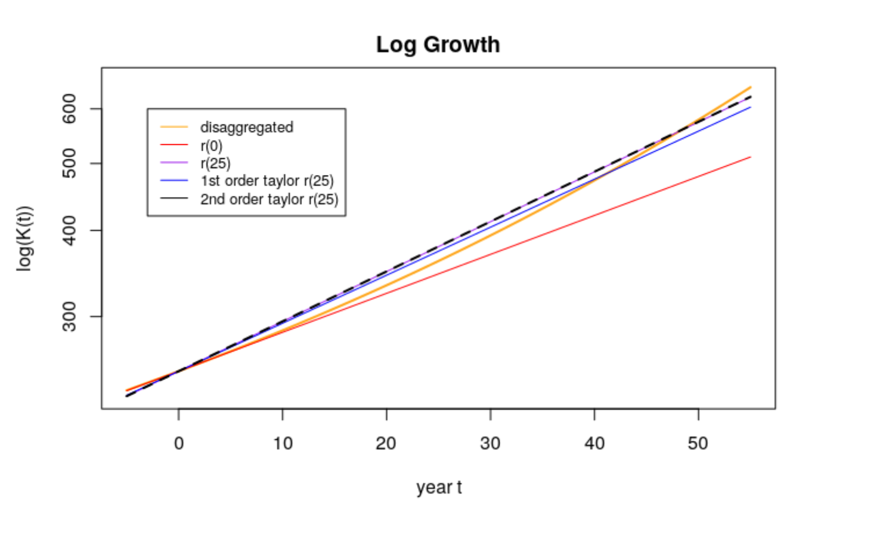

Chapter 2 Introduction to Demographic Heterogeneity
2.1 Outline
- What demographic heterogeneity is (and isn’t)
- Dynamics of population growth with two sub-groups
- Keyfitz’s result \(\bar{r}'(t) = \sigma^2_r(t)\).
- Ken’s model of Poisson heterogeneity
2.2 Part I. Conceptual Introduction
2.2.1 What is Demographic Heterogeneity?
- If we see different outcomes (e.g., people dying at different ages), is this Demographic Heterogeneity? NO.
- Demographic heterogeneity \(=\) different rates for different folks.
In a demographically heterogeneous population, people are of different types, with different type-specific rates.
(These types can be discrete, with individuals being homogeneous within their type, or they can be continuous with possibly no individual having exactly the same risk as another.)
2.2.1.1 An example
Let’s draw 10 individuals from a homogeneous population and heterogeneous population.
## Homogeneous hazard of 1/10
set.seed(13)
x.homo <- rexp(10, rate = 1/10)
## Heterogeneous hazard (half 1/6 and half 1/13)
## Note: I didn't pick these particular numbers for any specific reason
x.hetero <- c(rexp(5, rate = 1/6),
rexp(5, rate = 1/13))
par(mfrow = c(1,2))
dotchart(x.homo, main = "homogenous variation")
dotchart(x.hetero, main = "heterogeneous variation")
Figure 2.1: Homogeneity and Heterogeneity
- Can you tell which is which?
- Homogeneous: Chance only
- Heterogeneous: Chance + group variation in risk
- Would we expect to see a difference if we increased sample?
- A good question. We suspect that with a large enough sample we might be able to tell the difference between a mixture of two types and a single type. We can try a sample of, say, 1 million, and see if we can tell which is which.
## Homogeneous hazard of 1/10
set.seed(13)
n = 10^6
x.homo <- rexp(n, rate = 1/10)
## Heterogeneous hazard (half 1/6 and half 1/13)
## Note: I didn't pick these particular numbers for any specific reason
x.hetero <- c(rexp(n/2, rate = 1/6),
rexp(n/2, rate = 1/13))
## Look at histograms
par(mfrow = c(1,2))
hist(x.homo, main = "homogenous variation")
hist(x.hetero, main = "heterogeneous variation")Figure 2.2: Homogeneity and Heterogeneity (N = 1 million)
## we don't see much at this resolution
## To see in log scale, try
par(mfrow = c(1,2))
out.hom = hist(x.homo, breaks = 100)
out.het = hist(x.hetero, breaks = 100)Figure 2.3: Homogeneity and Heterogeneity (N = 1 million)
## Warning in xy.coords(x, y, xlabel, ylabel, log): 8 y values <= 0 omitted from
## logarithmic plot## Warning in xy.coords(x, y, xlabel, ylabel, log): 10 y values <= 0 omitted from
## logarithmic plotFigure 2.4: Homogeneity and Heterogeneity (N = 1 million)
2.2.2 Analogies
- Social inequality: equal opportunity vs. equal outcomes
- Analysis of variance: \(\mbox{total variance} = \mbox{within group} + \mbox{between group}\)
- Statistical models \(y = a + b x + \epsilon\)
2.2.3 What’s new?
- Dynamics.
- Heterogeneous populations evolve differently.
- Aggregates \(\neq\) Individuals
- Rates of growth (or decline)
- Changes over time or age or duration
- The trajectory of even the individual differs from population average
- Relative positions, change of groups, may be misleading.
- Terminology
- Heterogeneity
- Unobserved heterogeneity
- Selection
- Selective survival
Big Caveat: Fundamental Unidentifiability
- Same data of \(N\) observations
- \(N\) draws from 1 distribution
- \(1\) draw from \(N\) distributions
- Something in-between
Abel (66) and Beth (76) example.
- Same data of \(N\) observations
2.2.3.1 A 2nd example: Exponential growth, two countries
Two countries start equal size, but grow at different rates. What happens to aggregate growth rate?
rA = .03 ## growth rate of A
rB = .01 ## growth rate of A
KA = 100 ## starting pop size
KB = 100
t = 0:200
KA.t = KA*exp(rA*t) ## exp growth of A
KB.t = KB*exp(rB*t) ## exp growth of B
K <- KA.t + KB.t ## combined pop
r.bar = diff(log(K)) ## growth rate
plot(t[-1], r.bar, type = "l", ylim = c(0, 0.04),
ylab = "r.bar", xlab = "time")
abline(h = c(rA, rB), lty = 2)
Figure 2.5: Aggregate growth rate of sub-populations A + B
Questions
- What determines growth rate?
- How does it change over time?
- Does the process converge?
2.2.3.2 More examples to work
- Differential, constant mortality (\(\mu_A = .03\); \(\mu_B =.01\))
- Differential, time-varying mortality or growth.
- ``Movers and Stayers’’ (Migration)
- ``Movers and Stayers’’ (Marriage)
- Fecundity: aging or heterogeneity?
- Divorce: duration or heterogeneity?
- Duration of unemployment: duration or heterogeneity?
- Recidivism by time out of prison
2.2.4 Application
- Can you create a plateau?
- Can you create a crossover?
- Can you get aggregate rate to decline?
- Anything else?
2.3 Part II. Formal Analysis
2.3.1 Outline
- Keyfitz result
- Keyfitz USA-Mexico example
- Ken’s Poisson-Exponential Model
2.3.2 Keyfitz result
\[{d \over dt}\bar{r}(t) = \sigma^2_r(t)\]
When group-specific growth rates are constant the rate of change of the aggregate growth rate equals the variance of the growth rates.
- Derivation
By definition, \[ \bar{K}(t) = \sum_i K_i(t) = \sum_i K_i e^{r_i t} \] and
\[\bar{r}(t) = {{d \over dt} \bar{K}(t) \over \bar{K}(t)}\]
Let’s take derivatives and simplify, recalling definition of variance.
SOLVE?
2.3.3 US-Mexico Example
rm = 3.5/100
ru = .75/100
Km = 50
Ku = 100
t <- -50:150 ## go back in time to see rise and fall of variance
Kt = Km * exp(t*rm) + Ku * exp(t*ru)
bar.rt <- diff(log(Kt))
par(mfrow = c(2,2))
plot(t, Kt, lwd = 2, type = 'l')
title('Total pop size (solid)\n Group m (dashed)')
lines(t, Km * exp(t*rm), lty = 2, col = "red")
lines(t, Ku * exp(t*ru), lty = 2, col = "blue")
my.v = 26
abline(v = my.v)
plot(t, Kt, lwd = 2, type = 'l', log = 'y', ylim = c(.5, max(Kt)))
lines(t, Km * exp(t*rm), lty = 2, col = "red")
lines(t, Ku * exp(t*ru), lty = 2, col = "blue")
abline(v = my.v)
title("Total pop size (solid)\n Group 'm' (dashed): Log-scale")
plot(t[-1], bar.rt, type = 'l', main = 'Aggregate growth rate')
plot(t[-(1:2)], diff(bar.rt), type = 'l',
main = 'Change in aggregate growth rate')
Figure 2.6: Keyfitz result for US-Mexico
2.3.3.1 Commentary on Keyfitz result
Growth rates in heterogeneous populations start at pop average and then increase.
Heterogeneity pop growth
We will extend to cover non-constant growth
But
Doesn’t tell us how much bigger \(\bar{K}(t)\) is projection using constant aggregate rate \(\bar{r}(0)\).
Doesn’t give us a formula for time path of aggregate \(\bar{K}(t)\) or \(\bar{r}(t)\)
Note: our homework will try to address some of this using Taylor approximation.
2.3.4 The Origin of Professor Wachter’s Poisson-Exponential Model
Given a world with many sub-populations, each growing expontentially at their own rate, what can we say about the time-path of world population growth?
From an email:
Josh asks: Suppose we have a discrete mix of subpopulations growing at different intrinsic rates r whose maximum is r0. Is there a handy approximation for the growth path of the aggregate populations?
The assumption of a discrete mix is essential here. Otherwise Tauberian theorems apply and, with a vanishingly small portion of the population close to the maximum growth rate, we do not obtain long-run exponential growth.
I recommend modeling the discrete distribution of growth rates as a mixture of Poisson distributions.
We are considering
\[\begin{equation} \label{mixture} \bar{K}(t) = \sum_i e^{r_i t} K_i(0). \end{equation}\]
Ken suggests \[\begin{equation} \label{ri_def} r_i = r_0 - s(\lambda) \cdot a, \end{equation}\]
- \(r_0\) growth rate of the fastest growing sub-population
- \(s\) a non-negative Poisson distributed integer
- \(\lambda\) the parameter of the Poisson distribution (also it’s mean and variance)
- \(a\) gap between adjacent growth rates.
Example: sub-populations have growth rates 3, 2, 1, 0, -1, \(\ldots\) percent, then \(r_0 = 0.03\) and \(a = 0.01\). Sizes of sub-pops determined by Poisson dis’n
2.3.4.1 Closed-form result
\[ K(t) = K(0) e^{r_0 t} e^{-\lambda (1 - e^{-at})}. \]
To derive:
- Write out mixture to get \[ K(t) = K(0) e^{r_0 t} \sum_i e^{-sat} f(s) \]
- Substitute for \(f(s)\): \(Pois ~ {\lambda^s e^{-\lambda} \over s!}\)
- Recognize that our mixture contains the series representation of \(e^{-at}\)
Interpretation \[ K(t) = K(0) e^{r_0 t} e^{-\lambda (1 - e^{-at})}. \]
- Dominant term contains the maximum population growth rate \(r_0\),
- Second term gives the diminishing effect of the sub-populations with smaller population growth rates over time.
Some further analysis, What is the closed-form expression for \(\bar{r}(t)\)?
2.3.5 Some commentary
- Poisson and Exponential “fit”
- We’ll this complementarity again (e.g., with Gamma)
- Tractable models are super powerful for enhancing our understanding.
- But be careful. Avoid extremes: the model is right/wrong.
A BIG caveat, are disaggregated models necessarily better?
- Some potential problems:
- Aggregate constraints?
- Interacting sub-populations?
- Illusion of precision?
2.4 Conclusions
- Heterogeneity as variation in risk (not just outcome)
- Constantly growing parts \(\neq\) constantly growth whole
- Keyfitz result: Change in growth rate \(=\) variance of growth rates
- Poisson growth gives us a closed-form solution.
2.5 Questions
True or False? “If every part grows exponentially at its own rate, then the whole will also grow exponentially.” Explain your answer briefly.
List what you think are two of the best arguments in favor of doing a disaggregated projection? What are two of the best arguments in favor of doing an aggregated projection?
Let there be two countries: USA (\(u\)) and Mexico (\(m\)). Assume that in 1970, their population size (in millions) is \(K_u(1970) = 200\), \(K_m(1970) = 50\) and that their growth rates are \(r_u = .0075\) and \(r_m = 0.035\), respectively. Project the first few years and verify that the rate of change in the aggregate growth rate equals the variance of the growth rate. Does it matter what time points and period you consider?
Using the information from question 3, notice that the growth rate changes over the course of the 50 years, but there is a constant growth rate that will produce the exact same population after 50 years. A reasonable choice of the constant growth rate to apply is the value of the changing growth rate at year 25 (half-way through the period). We can estimate this using a Taylor series approximation: \[ \bar{r}(25) \approx \bar{r}(0) + 25\bar{r}'(0) + (25)^2 \bar{r}''(0) \]
- Show that \(\bar{r}''(t) = \bar{r}_3(t) - \bar{r}_2(t) \bar{r}(t) - 2 \bar{r}(t) \sigma^2_r(t)\) \
- Calculate the combined US-Mexico population after 50 years according to the following five (5) methods, plot the total population after 50 years according to these 5 methods on a graph.
- Dissaggregated (“true”) forecast, with each country growing at its own rate
- Aggregated forecast, pretending it’s one country, growing at \(\bar{r}(0)\)) for 50 years
- Aggregated forecast, growing at the “true” value of \(\bar{r}(25)\) for the whole period. (Use the value of \(\bar{r}(25)\)) that you calculate from the disaggregated forecast)
- Aggregated forecast, growing at the first-order Taylor series estimate of \(\bar{r}(25)\) for the whole period
- Aggregated forecast, growing at the second-order Taylor series estimate of \(\bar{r}(25)\) for the whole period
For Ken’s Poisson-Exponential model,
- What is the closed-form expression for \(\hat{r}(t)\)
- What is the variance of the growth rate?
- Write down an expression for the distortion index. What variables and parameters in the model does it depend on? Are there any variables or parameters that it doesn’t depend on? (difference of \(\bar{r}(t)\) and \(\bar{r}(0)\))
- What is the closed-form expression for \(\hat{r}(t)\)
2.6 Solutions
True or False? “If every part grows exponentially at its own rate, then the whole will also grow exponentially.” Explain your answer briefly. False.
From Keyfitz we know that the average growth rate of a heterogeneous population is: \[\bar{r}(t)=\frac{\sum_i{Q_i}{r_i}e^{r_i{t}}}{\sum_i{Q_i}e^{r_i{t}}}\] Here, \(\bar{r}(t)\) is not constant for all t as there is a compositional effect. This should be read as “If every part grows at a constant exponential rate, then the whole will also grow exponentially”. We could argue that only in the long term it is true.List what you think are two of the best arguments in favor of doing a disaggregated projection? What are two of the best arguments in favor of doing an aggregated projection?
- Disaggregated projections:
- Reveal the “true” path, patterns of individuals different from that of the aggregate.
- Take into account size of each sub-population, in particular the smaller ones.
- Are more precise. Growth rates for sub-populations reflect their intrinsic characteristics, such that projections that do not use appropriate rates can lead to adverse social/policy implications.
- Reveal the “true” path, patterns of individuals different from that of the aggregate.
- Aggregated projections:
- May used if a population is homogeneous rather than projecting many models for sub-populations.
- Provide a straightforward method of obtaining overall rates rather than the group-specific rates.
- Are easier to implement as more data available.
- May used if a population is homogeneous rather than projecting many models for sub-populations.
- Disaggregated projections:
There are two countries, \(u\) and \(m\), each with growth rates \(r_u = .0075\), \(r_m = 0.035\), and population sizes in 1970 of \(K_u(1970) = 200\), \(K_m(1970) = 50\). Use the first few years of the projection to verify that rate of change in the aggregate growth rate equals the variance of the growth rate. Does it matter what time points and period you consider?
From the information given, we can obtain \(\bar{r}(t)\) and \(\sigma_r^2(t)\) by projecting each country’s population using individual rates and then obtaining the total population, \[\bar{K}(t)= \sum_{i\in\{u,m\}}K_{i}(t) = \sum_{i\in\{u,m\}}K_{i}e^{r_{i} t}\] Applying the formula for aggregate growth rate to the USA-Mexico case we get: \[\begin{aligned} \bar{r}(t) & = \frac{\frac{d}{dt}\bar{K}(t)}{\bar{K}(t)}\\ & = \frac{K_u(0) r_u(t) e^{r_u(t) t} + K_m(0) r_m(t) e^{r_m(t) t}}{K_u(0) e^{r_u(t) t} + K_m(0) e^{r_m (t) t}} \end{aligned}\] For simplicity, time 0 is the year 1970 such that the proyection goes from 1971 (t=1) until 2020 (t=50).
Then, we can calculate the variance of the growth rates as: \[\begin{aligned} \sigma_r^2(t) &= \frac{{K_u(0) e^{r_u(t) t}(r_u(t) - \bar{r}(t))^2 + K_m(0) e^{r_m(t) t}(r_m(t) - \bar{r}(t))^2}} { {K_u(0) e^{r_u(t) t} + K_m(0) e^{r_m(t) t}}} \\ &= \frac{K_u(t) r_u(t)^2 + K_m(t) r_u(t)^2}{K_u(t)+K_m(t)}-\bar{r}(t)^2 \end{aligned}\] The table below show these results for projections at the beginning and ending of a 50 year period. Overall, the time points do not matter and we can verify that \(\frac{d\bar{r}(t)}{d(t)}=\sigma_r^2(t)\)\(t\) \(\sigma^2_r(t)\) \(K_u(t)\) \(K_m(t)\) \(\bar{K}(t)\) \(\bar{K}(t)-\bar{K}(t-1)\) \(\bar{r}(t)\) \(\bar{r}'(t)\) 0 0.00021 200 50 250 l 0.000123 201.506 51.781 253.287 3.2866 0.0131 2 0.000125 203.023 53.625 256.648 3.3614 0.0132 0.0001 3 0.000127 204.551 55.536 260.087 3.4385 0.0133 0.0001 \(\vdots\) \(\vdots\) \(\vdots\) \(\vdots\) \(\vdots\) \(\vdots\) \(\vdots\) \(\vdots\) 49 0.000189 288.824 277.833 566.658 50 0.000189 290.998 287.730 578.728 12.071 0.0211 51 0.000189 293.189 297.979 591.168 12.440 0.0213 0.0002 Using the information from question 3, notice that the growth rate changes over the course of the 50 years, but there is a constant growth rate that will produce the exact same population after 50 years. A reasonable choice of the constant growth rate to apply is the value of the changing growth rate at year 25 (half-way through the period). We can estimate this using a Taylor series approximation: \[ \bar{r}(25) \approx \bar{r}(0) + 25\bar{r}'(0) + (25)^2 \bar{r}''(0) \]
- Show that \(\bar{r}''(t) = \bar{r}_3(t) - \bar{r}_2(t) \bar{r}(t) - 2 \bar{r}(t) \sigma^2_r(t)\)
From before, we know that for \(i\in\{u,m\}\): \[\begin{aligned} \sigma_r^2(t) &= \bar{r}'(t) \\ & = \frac{d}{dt}\left[ \frac{ \sum K_i r_i e^{r_i t}} {\sum K_i e^{r_i t}} \right]\\ & = \frac{\sum K_i(0)r_i^2e^{r_it}} {\sum K_i(0)e^{r_it}} - \left(\frac{ \sum K_i(0)r_ie^{r_it}} {\sum K_i(0)e^{r_it}}\right)^2 \\ & = \frac{\sum K_i(0)r_i^2e^{r_it}} {\sum K_i(0)e^{r_it}} - \bar{r}^2(t) \end{aligned}\] Then, we take the second derivative of the growth rate by using the quotient rule \(\left(\frac{u}{v}\right)'= \frac{u'v-vu'}{v^2}\): \[\begin{aligned} \bar{r}''(t) &= { \frac{\left(\sum K_i(0)e^{r_it}\right)(\sum K_i(0)r_i^3e^{r_it}) -(\sum K_i(0)r_i^2e^{r_it})(\sum K_i(0)r_i e^{r_it})} {(\sum K_i(0)e^{r_it})^2 }} - 2\bar{r}(t)\times\bar{r}'(t)\\ &= \frac{ \sum K_i(0)r_i^3e^{r_it}} {\sum K_i(0)e^{r_it} } - \frac{ \sum K_i(0)r_i^2e^{r_it}} {\sum K_i(0)e^{r_it}}\times \frac{\sum K_i(0)r_i e^{r_it}}{\sum K_i(0)e^{r_it} } - 2\bar{r}(t)\sigma^2_r(t) \\ &= \bar{r}_3 (t) - \bar{r}_2(t)\bar{r}(t) - 2\bar{r}(t)\sigma^2_r(t) \end{aligned}\] where \(\bar{r}_n\) is the \(n\)th moment of \(\bar{r}(t)\), and it is known that \(\bar{r}'(t) = \sigma^2_r(t)\).
- Calculate the combined US-Mexico population after 50 years according to the following five (5) methods, plot the total population after 50 years according to these 5 methods on a graph.
For the following exercises, the population is in millions.
- Dissaggregated (“true”) forecast, with each country growing at its own rate:
\[\begin{aligned} \bar{K}(2020) &= K_u(2020) + K_m(2020)\\ &=K_u(1970) e^{(2020-1970)r_u} + K_m(1970) e^{(2020-1970)r_m}\\ &=200e^{.0075\times 50} + 50e^{.035\times 50}\\ &= 578.728 \end{aligned}\]
- Aggregated forecast, pretending it’s one country, growing at \(\bar{r}(0)\)) for 50 years:
\[\begin{aligned} \overline{r}(1970) &= \frac{\sum K_i(1970)r_i e^{r_i (1970-1970)}} {\sum K_i(1970)e^{r_i (1970-1970) }}\\ &=\frac{K_u(1970)r_u + K_m(1970)r_m }{K_u(1970) + K_m(1970) }\\ & = \frac{ 200\times .0075 + 50\times.035} {200+50 } = 0.013 \end{aligned}\] \[\begin{aligned} \bar{K}(2020) &= \bar{K}(1970)e^{\bar{r}(1970) (2020-1970)}\\ &= 250 e^{.013\times 50} \approx 478.8852 \end{aligned}\]
- Aggregated forecast, growing at the “true” value of \(\bar{r}(25)\) for the whole period. (Use the value of \(\bar{r}(25)\)) that you calculate from the disaggregated forecast):
Translating \(\bar{r}(25)\) onto the 1970 timeline, we should look at \(\bar{r}(1995)\)
\[\begin{aligned}
\bar{r}(1995) &= \sum K_i(1970)r_i e^{r_i (1995-1970)} \over \sum K_i(1970)e^{r_i (1995-1970) }\\
& = \frac{K_u(1970)r_u e^{r_u (25)} + K_m(1970)r_m e^{r_m (25)} }{K_u(1970)e^{r_u (25)} + K_m(1970)e^{r_m (25)} }\\
& =\frac{200\times.0075 e^{.0075\left(25\right)}+50\times.035 e^{.035\left(25\right)}}{200 e^{.0075\left(25\right)}+50 e^{.035\left(25\right)}} \approx 0.0176632\\
\bar{K}(2020) &= 250e^{0.016632(50)} \approx 574.25316
\end{aligned}\]
- Aggregated forecast, growing at the first-order Taylor series estimate of \(\bar{r}(25)\) for the whole period:
\[\begin{aligned} \sigma^2_r(1970) &= \frac{K_u(1970)r_u^2 + K_m(1970)r_m^2} {K_u(1970) + K_m(1970)} - \bar{r}^2(0) \\ & = \frac{(200)(0.0075)^2 + (50)(0.035)^2}{250}-(0.013)^2 \\ & = 0.000121 \\ \hat{\bar{r}}(1995) & \approx \bar{r}(1970) + 25\sigma^2_r(1970) = 0.016025 \\ \bar{K}(2020) &= 250 e^{0.016025(50)} \approx 557.0811485 \end{aligned}\]
- Aggregated forecast, growing at the second-order Taylor series estimate of \(\bar{r}(25)\) for the whole period:
For this exercise we need to first calculate the extra second-order term from the Taylor series, \(25^2\bar{r}''(0)\):
\[\begin{aligned} \bar{r}''(1970) &= \frac{200(0.0075)^3+50(0.035)^3}{250} - \frac{200(0.0075)^2+50(0.035)^2}{250} \times (0.013) - 2(0.013)(0.000121)\\ \hat{\bar{r}}(1995) & \approx \bar{r}(1970) + 25\sigma^2_r(1970) +(25)^2\bar{r}''(1970) \\ & = 0.01664891\\ \bar{K}(2020) &= 250 e^{0.01664891(50)} \\ & \approx 574.73337 \\ \end{aligned}\]
- Graphs
There are many methods to project populations. 
- Dissaggregated (“true”) forecast, with each country growing at its own rate:
- Show that \(\bar{r}''(t) = \bar{r}_3(t) - \bar{r}_2(t) \bar{r}(t) - 2 \bar{r}(t) \sigma^2_r(t)\)
For Ken’s Poisson-Exponential model,
- What is the closed-form expression for \(\hat{r}(t)\)
\[\begin{aligned} \hat{r}(t) &= \frac{d}{dt}log(\hat{k})\\ &= r_0 - \alpha \lambda e^{-\alpha t} \end{aligned}\] - What is the variance of the growth rate?
The variance of the growth rate is \(\sigma_r^2(t)\): \[\bar{r}'(t)= \sigma^2_r(t) = \alpha^2\lambda e^{-\alpha t}\] - Write down an expression for the distortion index. What variables and parameters in the model does it depend on? Are there any variables or parameters that it doesn’t depend on? (difference of \(\bar{r}(t)\) and \(\bar{r}(0)\))
Distortion index: \[\begin{aligned} \bar{r}(t) - \bar{r}(0) & = r_0 - \lambda \alpha e^{-\alpha t} - (r_0 - \lambda \alpha e^{0}) \\ & = \lambda \alpha - \lambda \alpha e^{-\alpha t}\\ & = \lambda \alpha(1-e^{-\alpha t}) \end{aligned}\] Depends on \(\lambda\), \(\alpha\), \(t\), but not \(r_0\) or \(s\). That is, it depends on the the gap between growth rates, the relative population sizes, fastest growth rate, the poisson distribution parameter, but not the poisson distributed integers.
- What is the closed-form expression for \(\hat{r}(t)\)